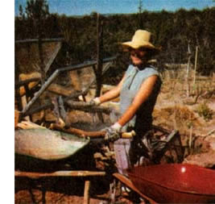

When sharing the windfall pays off.
We'd waited years for a decent apple harvest. The first few years after we planted the trees and tended them, late frost killed the fruit in early stages. Finally, after a milder spring, we anticipated a bumper crop and waited anxiously for them to ripen. Before they were ready, however, the electric fence around the orchard was knocked down night after night, the wires driven deep into the tree trunks. Limbs were torn from the trees, and the best apples disappeared. It was downright discouraging.
I said to my husband, "Bears." He said I had bears on the brain. However, when I hand-mowed the orchard a couple of weeks later, piles of bear droppings were exposed. Sure, there were signs of deer and rabbits, but mainly of bears. End of discussion.
Not to put all the blame on the bears. Once the fence was down, the deer came in, stood on tiptoes, stretched their necks, and helped themselves to the best apples the heights had to offer.
< Joyce E. Tomanek: smarter than the average bear
Last year, I decided to head off the problem before it could rear its ugly head. As the apples began to ripen, I started picking up windfall, checking the trees for defective fruit, and culling the smallest fruit every afternoon. I carried them a short distance from the orchard (close enough for the animals to find but far enough, I hoped, to keep them from being tempted to seek more) and dumped them in two heaps--one for the bears and one for deer was the way I envisioned it--for the wild ones to feast on.
The orchard benefited from not having insect-infested, rotting fruit on the ground, and from bears not injuring the trees. The fence stayed intact, which kept the deer out. Rabbits sneaked under, but they just munched on occasional windfall that I missed. We had all the apples we could eat and bushels to share with friends.
We've done the same thing again this year. It is working just fine. The bears are happy, the deer are happy, and so are we.
Susan Ggrelock touts the benefit of buckwheat.>
--Joyce E. Tomanek
Clarkesville, Georgia
|
|
 |
|